The recipe that follows is a basic formula for producing natural (uncolored, unprocessed) hard cheese at home. Keep in mind, however, that domestic cheesemaking is an imprecise art at best. Many variables-such as how "ripe" the milk is, the length of time (and the temperature at which) the curd is heated, and the number of weeks of curing-affect the flavor and texture of the end product. As a result, you may find that you have to slightly adjust the techniques involved to suit your own tastes and kitchen conditions.
To begin making cheese, all you need besides milk is a floating dairy thermometer (most any immersible type will do), two enameled containers (one of which can "nest" inside the other), rennet (available at most drugstores, or from Chas. Hansen Laboratory, Inc., 9015 W. Maple St., Milwaukee, Wis. 53214), a long-handled spoon and knife, three or four yards of cheesecloth, a colander, a one-pound package of paraffin, a press something like the one detailed below . . . and an all-abiding appetite for good, flavorful food.
(Our thanks to Chas. Hansen Laboratory, Inc. for providing much of the information presented here.)
1. PREPARE THE MILK:
HEAT TO 86° F
Allow four quarts of the evening's fresh whole milk (either cow's or goat's) to ripen overnight in a cold place (50-60° F). Mix in four quarts of the next morning's milk and heat the two gallons of liquid to 86° F in an enameled container. (Note: In her Old-Fashioned Recipe Book, Carla Emery forgoes the night-long ripening process, and simply begins her cheesemaking in the morning by heating all eight quarts of raw milk at once. Still others say it's all right to make cheese from pasteurized whole milk or even skimmed milk, if you add the "starter" discussed in Step 2. )
2. ADD "STARTER"
(OPTIONAL)
"Starters"-cultured buttermilk, plain yogurt, or milk held at room temperature until it clabbers-are sometimes used to increase lactic acid content and thus strengthen cheese flavor. If you've "ripened" raw milk as described in Step 1, or if you prefer a very mild cheese, you can now add rennet to the warm liquid. If you're using pasteurized or skimmed milk, or desire a "zestier" product, thoroughly mix into the 86° F fluid a cup and a half of any of the above substances (or a commercial "starter"), cover, and let the solution set in a warm shaded room for 2 to 4 hours before proceeding to Step 3.
3. MIX IN RENNET
Dissolve one-quarter of a "Hansen's Cheese Rennet Tablet" in one-half cup of cold water (or use any other rennet brand according to directions). Put the container of milk in a larger pan of warm (88-90° F) water, and stir in rennet solution. (Note: Rennet is produced from an enzyme found in calves' stomachs, so vegetarians often use non-animal-derived substitutes sold in health food stores. And in Stalking the Healthful Herbs , Euell Gibbons suggests employing the liquid from cooked stinging nettles. "When one adds as much common table salt to this juice as it will absorb," says Euell, "the mixture acquires the ability to coagulate milk, like rennet.")
4. LET SET UNTIL CURD BREAKS CLEANLY
Once the rennet has been mixed in thoroughly, cover the container and let the mixture stand undisturbed until a firm curd forms (30-45 minutes). To test the "readiness" of the concoction, slip your finger (washed, of course) into the coagulated milk at a 45° angle and lift up slowly. If the curd breaks cleanly on a straight line-and leaves no residue on your finger-it is ready to be cut. If it's still the consistency of tired yogurt, be patient, and try again a bit later.
5. CUTTING THE CURD: SLICE TWO WAYS VERTICALLY, THEN TWO WAYS AT AN ANGLE
Use a clean butcher knife or spatula long enough so that the instrument will go all the way to the bottom of the container without the handle dipping into the "set" milk. With the blade held straight up and down, cut the curd into even squares of about 3/8" (as shown in Positions 1 and 2 of the illustration). Then use your knife or spatula at an angle (see Position 3) and-starting about 1" from the side of the container-carefully undercut the curd into pieces about 1/2" to 1" thick. (Begin at the top and make each slice about one-half inch to one inch lower than the one before.) Next give the pail (or whatever you're using) a half turn, and draw similar angular cuts from the other side (as shown in Position 4). You needn't worry if the sections are not geometrically perfect "textbook" cubes. The basic idea here is simply to divide the congealed mass into small pieces of relatively uniform size, in order to help speed the separation of the curds (the solid part of milk) from the whey (the liquid portion).
6. STIR CURD BY HAND CONTINUOUSLY FOR FIFTEEN MINUTES
Stick your hand into the squishy curd (it's fun!) and thoroughly-but very gently-stir the cut-up mixture with long, slow movements around the container, and from the bottom up. Carefully cut up the larger pieces of coagulated milk as they appear, but don't squash the curd . Try to make all the chunks as nearly the same size as you possibly can. Stir continuously with your hand for a full fifteen minutes, to keep the pieces of curd from sticking together. If your arm gets tired, just remember that there's nothing a child enjoys more than thrusting a bare little hand into goo and swooshing it around a bit . . . which is essentially all that's required here.
7. WARM SLOWLY FOR ABOUT 1 HOUR TO 102° F
With the container still in a larger pan of water, slowly heat the mixture "double boiler style" to 102° F, raising the temperature of the curds and whey about a degree and a half every five minutes. Stir with a clean spoon frequently (if not constantly) to keep the curd from lumping together, and to maintain an even temperature throughout the concoction. You'll notice that-as more and more whey separates and rises to the top-the solid chunks will become firmer. Continue heating slowly (the process usually takes about one hour) until the curd-which should eventually look somewhat like scrambled eggs-holds its shape and readily falls apart on your hand without squeezing. If it appears to still be too soupy, don't lose patience. Heat a little while longer-even to one or two degrees above 102° F, if necessary-until the curd does pass the test.
8. STOP HEATING.
STIR OCCASIONALLY FOR 1 HOUR
Remove the container of curds and whey from the pan of hot water and let it set. Stir every five or ten minutes to keep the lumps from matting together. As the curd cools, it will contract and force out more whey. Let the solid curd stand in the warm liquid for about an hour, or until most of the fluid has separated. (It is important to allow the curd to become firm, or your cheese may have a weak, pasty body and develop a sour or undesirable taste.) To test for "doneness", squeeze a small handful of curd gently, then release it quickly. If it falls apart and shows very little tendency to stick together, you're ready to go on to the next step.
9. POUR CURD
Line a colander with three to four square feet of cheesecloth, and set a pan underneath. Fasten the fabric to the strainer with clothespins. Pour the mixture in and allow to drain, then hold two corners of the cloth in each hand and let the curd roll back and forth without sticking together for two to three minutes, so more whey can run off. When the curd feels springy and rubbery and "squeaks" when you chew a small piece, it's ready to be salted. (Use the reserved vitamin-rich whey in bread recipes, as a treat for livestock or household pets, or as a skin softener for face and hands.)
10. SALT THE CURD
Place the cloth that contains the curd in an empty pail or pan, and sprinkle one tablespoon of salt over the white mass. Mix well with your hands-without squeezing-and then add an additional tablespoon of salt, and mix again. This step is for flavoring purposes only, so you may want to adjust the amount of salt you use in subsequent batches to suit your taste. (Note: Carla Emery and some others who've written on the subject advise adding the sodium chloride in three portions rather than two, in order to be sure the salt is dispersed evenly and consistently throughout the curd.)
11. FORM INTO BALL
Once the curd has been salted, lift the cheesecloth up and tie the four corners together crosswise to form a kind of elongated sack. Pat the curd into the shape of a ball, and hang the whole works up over a pan. Allow the bundle to drain for around one-half to three-quarters of an hour. (Note: This step represents yet another area of disagreement among cheesemakers. Some skip this stage entirely, while others steadfastly maintain that the cheese ball should hang for three or four hours. We recommend draining your first batch of cheese the suggested one-half to three-quarters of an hour, and then experimenting with longer or shorter "hangings" later on if you feel there's a need.)
12. DRESS THE CHEESE
After the bundle of curd has drained sufficiently, place it on a flat surface and remove the cloth from the ball. Take a clean dish towel (or some other piece of fabric with a similar "weight" and shape) and fold it lengthwise to form a multi-layered band about three inches wide and two feet long. Wrap the strip around the ball as tightly as you can, and fasten the ends securely with safety pins to make a kind of circular "girdle" for the cheese. Push the mass down firmly with your hands, and make the top surface smooth by crumbling and pressing the curd with your fingers. Your round loaf of cheese should not be more than six inches across, or have cracks extending into its center, because either condition can make your "masterpiece" dry out too much while curing. (Note: When great-grandma "girdled" a batch of homestyle goodness, she usually used a wooden hoop designed especially for the purpose, rather than a cloth "belt" like the one you've just fashioned. Unfortunately, those very handy-and undoubtedly superior-implements have gone the way of the buggy whip in this country. If you do happen to run across one in your great-aunt's attic, however, lay claim to it pronto. You'll find that the ingenious little device beats the above improvised "headband" by a country mile.)
13. PRESS CHEESE
All you need to build a good, serviceable cheese press like the one sketched at the right is two 1" X 8" X 12" boards, four bricks, and two 1" dowels (pieces of an old broomstick will do). Once you have the press constructed, place three or four thicknesses of cheesecloth on top of and under your round of cheese. Put the covered curd on the bottom board of the press, push the upper plank down so that it rests squarely on the cheese, and place two bricks on top. Before you go to bed at night, turn the wrapped round over and weight the "sandwich" down with a total of four bricks. Let stand till morning.
14. PARAFFIN. STORE IN COOL PLACE
Remove the cloths and place your cheese on a board in a cool, airy place. Turn the loaf once or twice every day for a few days until a dry rind has formed. (If a mold appears, simply cut it away or wipe it off with a solution of salt and water.) Once a hard outer skin has developed, heat some paraffin to 210°-220° F in a deep pan, and dip the cheese-first one half, then the other-in the hot wax. (Some folks prefer to "paint" the liquid on with a brush, while others elect to rub vegetable or mineral oil-instead of paraffin-onto the cheese's surface.) Store the round in a root cellar or similarly cool (45°-55° F) area. Turn it over each day for several days, then two to three times a week. The round is usually ready to eat after three to four weeks . . . but most cheesemakers agree that sixty to ninety days of aging is best for a really mellow, well-ripened, flavor-some cheese.
FOR MORE INFORMATION: If you'd like to learn more about cheesemaking, we recommend that you read Making Homemade Cheeses & Butter by Phyllis Hobson (available from Garden Way Publishing, Charlotte, Vt. 05445, or MOTHER'S Bookshelf, for $2.95) and the "Dairy Section" of Carla Emery's Old-Fashioned Recipe Book (available for $12.95 from The Living Room Mimeographer, Kendrick, Idaho 83537).
|
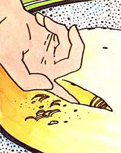 |
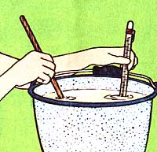 |
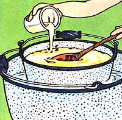 |
|
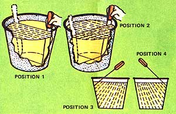 |
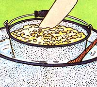 |
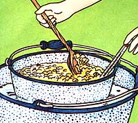 |
|
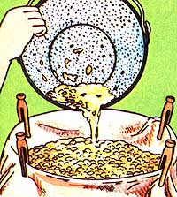 |
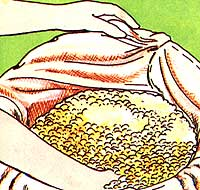 |
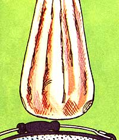 |
|
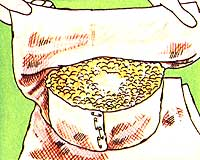 |
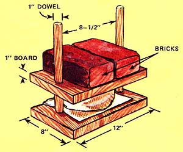 |
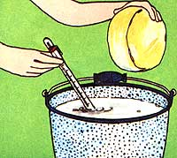 |